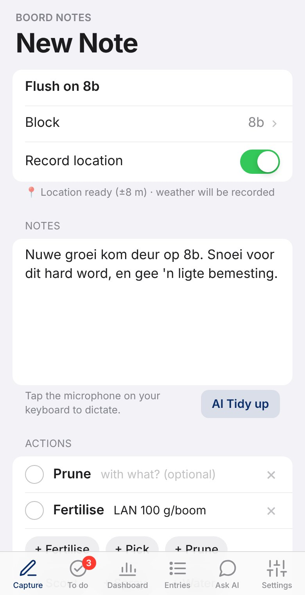
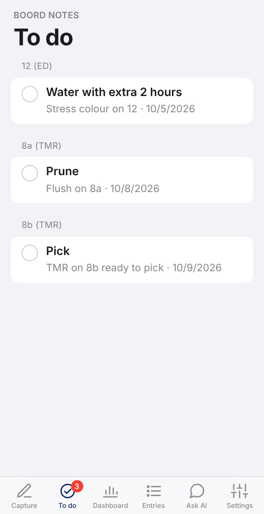
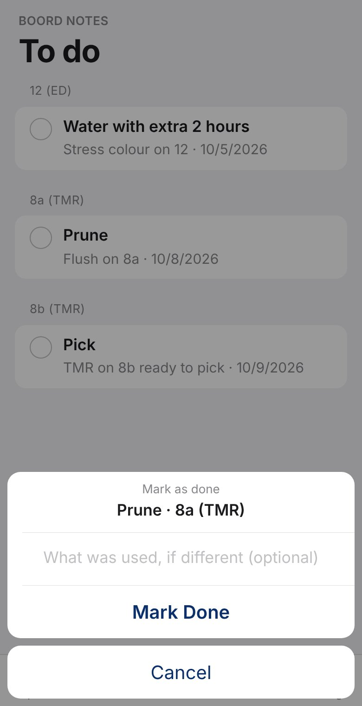
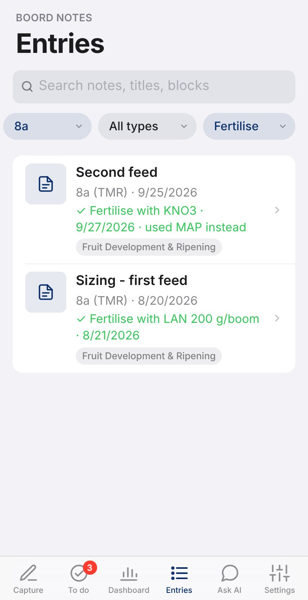
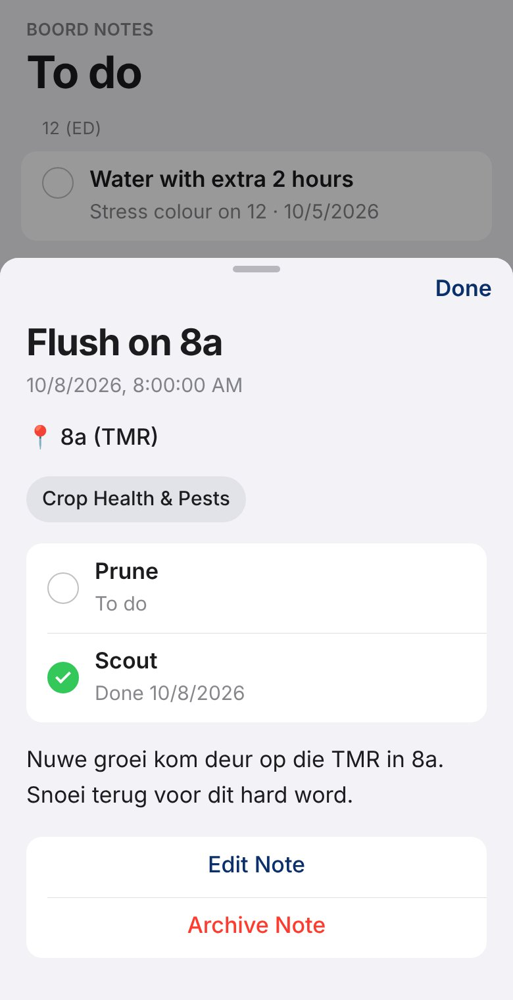

How to capture, find and act on farm knowledge on your iPhone.
For Andre and his son.
For app version 2.9 · October 2026
Boord Notes is a private notebook for farm knowledge: how a job is done, what an odd piece of equipment does, what you saw in a block and what it needs. Anything worth handing on goes in, so it is all in one place later.
A note holds a title, the notes text, a block (or any other spot), any number of actions, tags and photos. It also records where you were and the weather when you first saved it.
Once, for the farm: add the blocks in Settings → Blocks (section 7). Until then the Block field on a note is a plain text box.
The app looks and works like an iPhone app. The tabs along the bottom are Capture, To do, Dashboard, Entries, Ask AI (only when AI help is switched on) and Settings. The app opens on Capture. It follows the phone's own light or dark setting.
|  A note with two actions to do |
Write down what you see, and then what it means for the block. A few examples:
| You see | Action on the note |
|---|---|
| New flush on the trees | Prune - To do |
| Fruit at a stage that needs feeding | Fertilise with LAN 200 g/tree - To do |
| TMR litchis that look ready | Pick - To do |
| Leaf colour shows stress | Water, extra 2 hours - To do (and maybe Fertilise if it is the soil) |
| "I sprayed 8a this morning" | Spray with … - tap the circle: already done |
The line under Record location says whether a GPS fix is ready ("Location ready" or "No location available"). Saving never waits for it. The Record location switch turns this off if you do not want it.
The To do tab lists every action still waiting, grouped by block, with the ones that have waited longest at the top. The red number on the tab is how many are open. Tap the rest of a row to open its note.
 Open actions by block |
 Marking one done |
When the job is done: tap the circle next to it. A small panel asks What was used, if different - fill it in if the plan changed (e.g. "used MAP instead"), or leave it empty. Tap Mark Done. The action leaves the list and the note now shows it done, with the date.
You can also tick actions off from inside a note. Ticking off works without signal too - it is sent with the next sync, dated when you ticked it.
Search by title, notes text or block. Below the search are filter buttons: tag, block, type (every block of that variety) and action. A note with open actions shows "2 to do" on its card.
|
A block's history. Choose a block and an action together - say 8a and Fertilise - to see every fertilising of 8a. Each note then shows how that action stands: a green tick with the date it was done and anything noted, or "to do". Opening a note. Tap it. It slides up from the bottom with its block, actions, tags, notes and photos. Tap Done (top right) or the dimmed area above it to close it. Tap the coordinates to open the spot in your map app, handy for walking back to a particular tree. |  8a + Fertilise: the block's history |
A quick summary: total notes, notes this week, how many have photos, tags in use, a count per tag, and the latest notes.
|  A note: one action to do, one done |
These two buttons appear only once the server has been given an AI key, and they need signal. Without them, everything else works exactly the same.
| Card | What it is for |
|---|---|
| Tags | Every tag with how many notes use it. Add new ones with Add. Remove appears only on tags no note uses. |
| Actions NEW | The actions offered on Capture: Spray, Water, Fertilise, Prune, Pick, Scout to start with. Add others (e.g. Mulch) here or straight from a note. |
| Blocks | The farm's blocks, each with its type (variety, e.g. TMR). Type the name and type, then Add Block. Edit fixes a name or type, and a new name moves onto all its notes. Block names typed on older notes are listed under On notes, but not on the list - tap Add to List. |
| Backups | Make a backup now and download earlier ones (section 9). |
"pruning" and "Pruning" count as the same name everywhere, so a tag, action or block cannot be split in two by a capital letter.
Every save goes onto the phone first, so it always works. In the background the app then sends notes to the server, and only afterwards their photos. It tries again about every 10 seconds and straight away when signal returns. You do nothing.
The server makes a full backup (notes and photos) every night at 02:00 and keeps the latest 14. It is skipped if the PC is off at that time.
To make one yourself: Settings → Backups → Back Up Now. The button shows "Backing up..." until done. Each backup in the list has a Download link.
| Message | Meaning |
|---|---|
| Backup created | Done. The new backup is at the top of the list. |
| Backup failed - can't reach the server | Check Tailscale and that the server is running. |
| Backup failed on the server (500) | The server was reached but the backup failed, most often a full disk. Ask whoever looks after the PC. |
| Backup timed out | It may still be finishing. Wait a minute and check the list before trying again. |
| Problem | What to do |
|---|---|
| "Not yet synced" will not clear | Swipe the app away in the app switcher and reopen it from its icon. If it persists, check Tailscale is connected and the address loads in Safari. |
| Block is a plain text box, not a list | No blocks have been set up yet. Add them in Settings → Blocks, with signal. |
| An action ticked off still shows on the other phone | The tick reaches the server with the next sync. Open the app with signal on the phone that ticked it. |
| AI Tidy up or Ask AI is missing | The server has no AI key yet, or the app has not checked since. Both also need signal. |
| Add Photo does nothing, or Camera fails | Open the app from the Home Screen icon on the https address. As a fallback, take the photo in the normal Camera app and attach it with Photo Library. |
| No location on a note | Open from the Home Screen icon. Check Settings → Privacy & Security → Location Services is on and allowed "While Using". Go outdoors and wait a few seconds. The note saves either way. |
| Location but no weather | Normal when the note was made without signal. Blank means "not known". |
| Dictation types the wrong language | Switch keyboard with the globe key, and confirm both keyboards are added. |
| A note vanished after installing the icon | It was captured in a Safari tab before installing and cannot be moved across. Re-enter it in the installed app. |
| App looks normal but everything fails (old :8443 icon) | Delete the icon, remove the server from Safari → Settings → Advanced → Website Data, then re-add the icon from the :9443 address. |